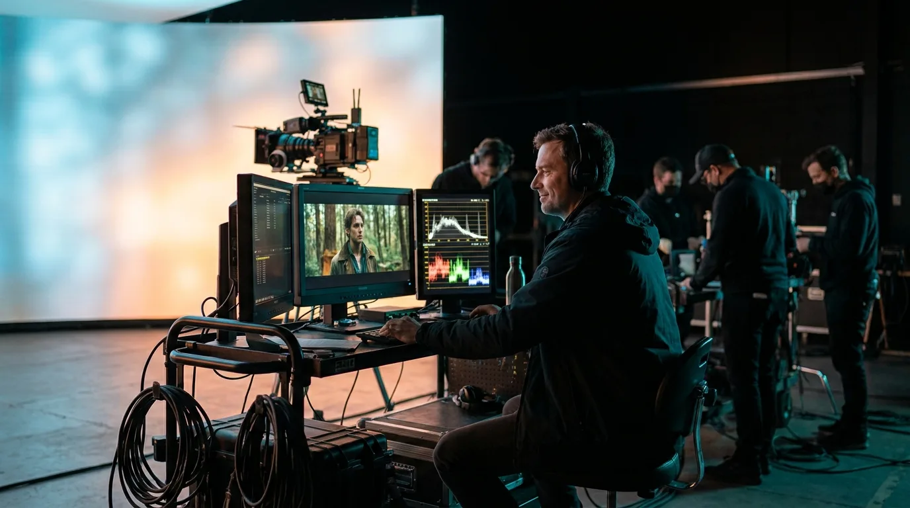
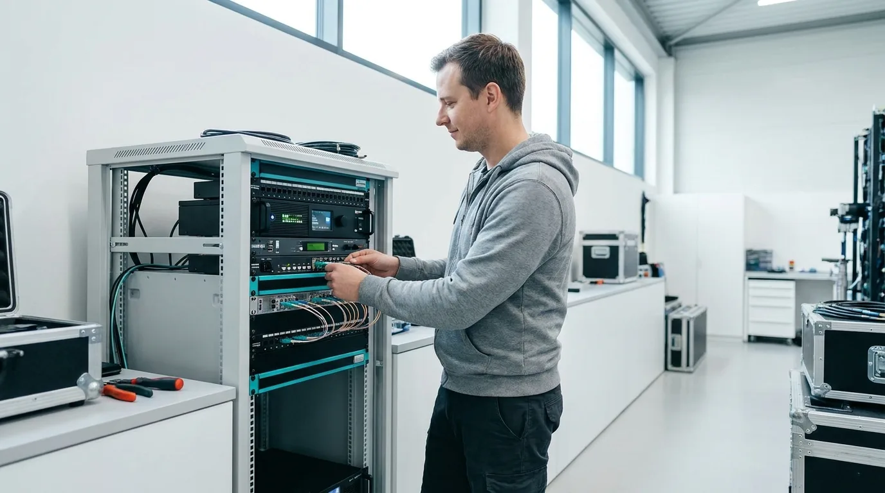
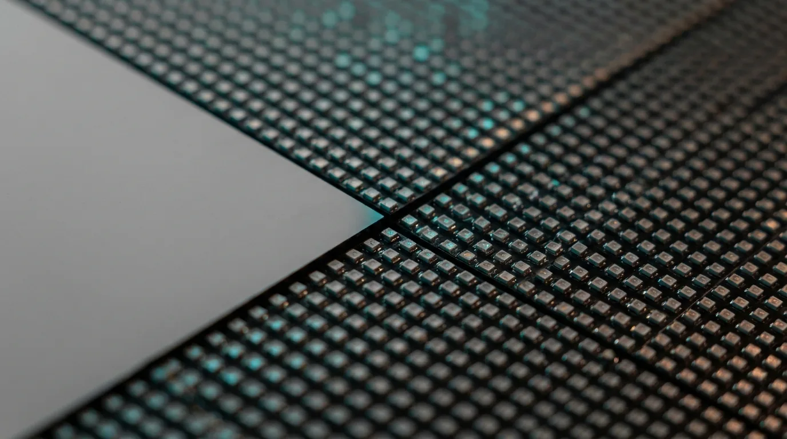

The LED wall should hand your DIT a clean, calibrated signal. Too often it hands them a fight: a sky that drifts, a colour that will not match camera, a sync that slips on a fast shutter. Cineva by Apex Sound & Light builds the wall so that does not happen, and the fix lives in the volume, not in a server upsell.
A DIT can tell in five minutes whether a wall was set up by people who think about the cart. When the colour is honest and the timecode is locked, the DIT pulls a confident image and moves on. When it is not, the day turns into a running argument between the wall and the camera, and that argument costs you setups. The wall is not the villain. A wall that fights the DIT is almost always a wall that was treated as furniture instead of a source the camera has to believe.
One pipeline
The wall and the camera have to speak the same colour. That means a pipeline the DIT recognizes from day one: Rec.709 for the broadcast and streaming deliverables, Rec.2020 when the show grades wide, ACES when the post house wants a scene-referred path end to end. We set the wall to match the colour space the camera is shooting, so what the wall emits is what the sensor was built to read.
This is where the 16-bit colour on the Black Pearl BP2 V2 earns its keep. Bit depth is the difference between a sky that grades smoothly and one that stair-steps into bands the moment the colourist pushes it. A deep pipeline gives the DIT room to work and gives post a clean handoff, instead of a background that was already broken on the stage.
Get the colour space wrong and the background fights every other source on the floor. Skin tones drift against the plate, a blue sky reads cyan on camera, and the colourist inherits a mess that should never have left the stage. Get it right and the wall behaves like a window, not a screen with an opinion.

Locked to frame
Colour is half the job. The other half is sync. The wall has to refresh in step with the shutter, or you get tearing and banding the moment the camera moves or the DP rolls a fast frame rate. We genlock the volume to the camera and stamp the same timecode across the wall, the playback, and the cart, so every device on the floor agrees on what frame it is. The 7680Hz refresh on the Black Pearl BP2 V2 panels gives the shutter clean room to work, but refresh only helps when the whole chain is locked to it.
Frame-accurate sync is what lets the DIT trust the monitor. A locked wall reads the same on the waveform every take, so the DIT is grading the shot, not chasing the rig. Shared timecode does the same favour for editorial: when the wall, the playback, and the camera all carry the same stamp, the dailies line up and nobody is hunting for which take had the right background.

A recall, not a rebuild
Here is the line we hold the wall to: a different sky should be a recall, not a rebuild. When the director wants golden hour instead of noon, the colour pipeline and the processing should let the operator load the new look and hold the same calibration, not tear the wall down and start over. The Brompton Tessera platform we run carries that calibration as part of the volume, so the recall is fast and the colour stays honest across the change.
That is also where a clean DIT signal comes from: the wall, the processing, and the operator at the cart working as one chain. The operator can recall a state, hold sync, and hand the cart a clean image without rebuilding the look between setups. None of that is a separate product. It is how we build the volume.
The wall people argue with is usually a wall nobody calibrated to the camera. The wall the DIT trusts is the one that was set up for the cart from the first tile. We build the second kind.